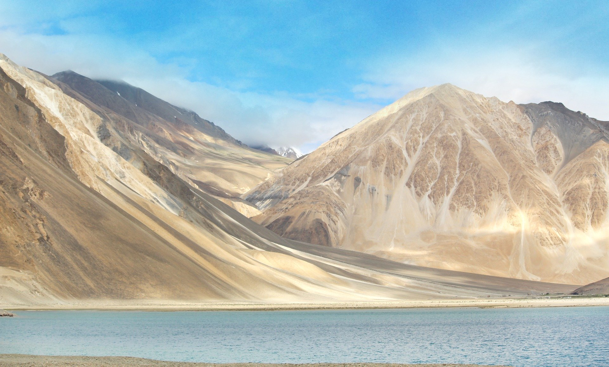
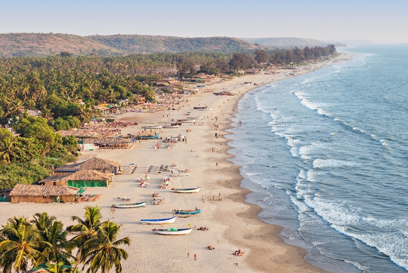
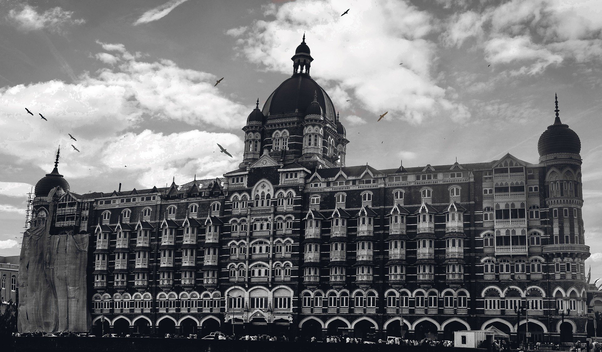

1.TAJ MAHAL– The Land Of Taj
(Where to stay..)
Tourists across the world visit India just to witness the spectacular symbol of love. The majestic monument has to be on your bucket list for it’s the cultural epitome of India.
Best time to visit: April to October
How to reach :
By air: Kheria airport, 13 km away from Agra, is a seasonal commercial airport and is connected only by Air India flights from New Delhi.
By rail: Agra Cantt Station (the main station), Agra Fort Railway Station, Raja ki Mandi, Agra City, and Idgah Railway Station are well-connected by a network of trains to cities like Delhi, Jaipur, Gwalior, Jhansi, Kolkata, Mumbai, and Chennai.
By road: Agra has two major interstate bus terminals called Idgah Bus Stand and ISBT that connect it to cities like Delhi, Jaipur, Gwalior, Lucknow, & Kanpur.
Attractions: Taj Mahal, Agra Fort, Tomb of I’timād-ud-Daulah, Mehtab Bagh, Jama Masjid, Guru ka Tal, Tomb of Akbar the Great, Chini Ka Rauza, Moti Masjid, Fatehpur Sikri, Dilli Gate, Great gate (Darwaza i rauza), Amar Singh Gate, Kaanch Mahal, and Sikandra.
Average Temperature: 24 to 34 degree celsius
2.LEH-LADAKH – The Biker’s Paradise
(Where to stay..)
Undoubtedly, Leh – Ladakh is on every travel enthusiasts list of dream places to visit in India before they turn 30. Ride on the crazy winding roads, get stuck in the middle of nowhere, sleep with the locals, go trekking in Ladakh, and learn to be independent on the desert mountains as you undertake this adventurous journey in one of the best places in India.
Best time to visit: April to mid-May and mid-September to mid-October
How to reach :
By air: Kushok Bakula Rimpochee Airport in Leh is the airport connecting the region to other places by air.
By rail: Jammu Tawi Railway Station (700 km from Ladakh) is the nearest rail head. From here, one can hire a cab or board a JKSRTC bus to Ladakh.
By road: The most popular means of reach Ladakh remains to be road. Travelers can go on a bike/jeep ride to the destination. Bike trips from Delhi, Chandigarh, and Manali are most popular.
Attractions: Zanskar Valley, Pangong Tso Lake, Khardung-La Pass, Spituk Gompa, and Hemis National Park
Rental bikes: You can rent a bike in Ladakh and it costs upto INR 2000 per day
Average Temperature: 15 degree celsius (Min.) and 28 degree celsius (Max.)
Accommodation: Stok Palace Heritage hotel and Shakti Himalaya are some of the accommodations you can stay at in Ladakh
Attractions: Nubra Valley, Khardung La, Shanti Stupa, Magnetic Hill, Pangong lake and leh palace are a must visit. 15 degree celsius (Min.) and 28 degree celsius (Max.)
3.KERALA – The God’s Own Country
(Where to stay..)
To all the nature lover’s out there. A trip to God’s own country is a must in your twenties for its enchanting wilderness. Luscious green trees, pristine water, crazy wildlife experience – visit Kerala for more such wonderful delights.
Best time to visit: November to January and June to Augustr
How to reach :
By air: Kerala has three main airports – Calicut International Airport, Cochin International Airport, and Trivandrum International Airport. These airports connect Kerala with different cities across the world, such as Delhi, Mumbai, Chennai, Muscat, and Dubai.
By rail: Thiruvananthapuram Central railway station, Ernakulam Junction railway station, and Kollam Junction railway station are three major rail heads of Kerala. These stations connect the state with cities and towns across India.
Attractions:
1.Alappuzha Beach, Krishnapuram Palace, Kumarakom bird sanctuary, Marari Beach, Revi Karunakaran Museum, Punnamada Lake, Pathiramanal, and Sri Krishna Temple in Ambalappuzha
2.TATA Tea Museum, Meesapulimala, Blossom Park, Pothamedu ViewPoint, Attukal Waterfalls, Cheeyappara Waterfalls, Kundala Lake, Mattupetty Dam, Anamudi, and Eravikulam National Park
3.Periyar Wildlife Sanctuary, Mangla Devi Temple, Abraham’s Spice Garden, Murikkady, Kadathanadan Kalari Centre, Chellarkovil, Kumily, and Deepa World Spice & Ayurvedic Garden
Average Temperature: 28 degree celsius
4.GOA – The Official Party Hub
(Where to stay..)
Unarguably, Goa has to be the amongst the first few dream places to visit in India in your twenties. Young and energetic! Amazing nightlife, a variety of booze, beach shacks and dirt cheap prices – Goa is one of the best holiday destinations in India that makes your trip memorable.
Best time to visit: November to February
How to reach :
By air: Dabolim International Airport is the major airport in Goa.
By rail: Madgaon Railway Station and Thivim Railway Station are the main railway heads of Goa.
By road: Margao Bus Terminal, Kadamba Bus Terminal, and Mapusa Bus Terminal are best connected bus terminals in Goa. However, many people prefer taking a car/bike ride from Mumbai and Pune.
By Sea: You can also opt for ferry services which is an excellent way of commuting. You can take a ferry from Mumbai to Panaji and easily reach Goa.
Attractions:Beaches like Vagator, Calangute, Anjuna, Colva, & Benaulim, Fort Aguada, Church of Mae De Deus, Basilica of Bom Jesus, Temple of Bodgeshwar, Dudhsagar Waterfalls, St Xavier’s Church, Grand Island (for watersports), Deltin Royale Casino and clubs like Cafe Mambos,Titos, LPK (Love Passion Karma), SinQ, & Club Cubana.
Average Temperature: 24 to 34 degree celsius
5.MUMBAI – The City That Never Sleeps
(Where to stay..)
The city that lets you live a carefree life and the one that never sleeps. Mumbai is about its people, the spirit of enjoying the nightclubs and of course Bollywood. Live like a mumbaikar, bite into the vada pav and sip a chai on your way to the locals.
Best time to visit: November to February
How to reach :
By air: Chhatrapati Shivaji International Airport lies 30 km north of the city. Santa Cruz Domestic Airport lies 26 km north of the city.
By rail: Trains from Central, East, and West India arrive at the Chhatrapati Shivaji Terminus (erstwhile VT). Trains from the North arrive at Bombay Central Station.
By road: Most of the inter-Maharashtra buses arrive at Mumbai Central Bus Station. But the ones from Pune and Nasik arrive at the ASIAD bus stand near Dadar railway station.
Attractions: Gateway of India, Haji Ali Dargah, Elephanta Caves & island, Siddhivinayak Temple, Essel World, Kanheri Caves, Rajabai Clock Tower, Kamala Nehru Park, Dr. Bhau Daji Lad Museum, Nehru Planetarium, Worli Fort, and Marine Drive
Average Temperature: 25 degree celsius.